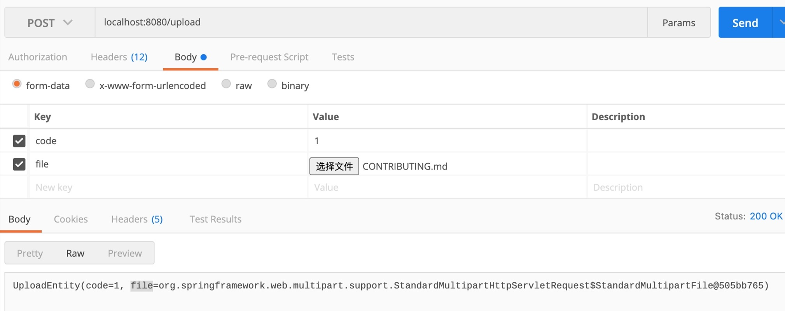

本文分析使用Spring Boot 2.4.1，对应Spring Framework 5.3.1
好吧，我写这篇文章时，问题已经被Spring官方修复了。在5.3.2进行release。
这是我当时给github提的issue：MockHttpServletRequest getParameter(String name) can not get string value parts，由于我捉急英文水平和沟通方式，官方在回复我认为不是一个问题后我就没理睬了。今天才发现已经解决，我们就来看看这个问题怎么产生的，和对应的Servlet3.0协议是怎么描述这部分的。
MockMvc ignores MultipartFile registrations when both files and parts are registered #26166
场景
Spring文件上传是个很常见的场景，使用Http的multipart/form-data可以上传文件，multipart/form-data在rfc2388中定义。multipart/form-data一次可以提交多个Parts，每个 Part 可以是一个文件，也可以是一个表单数据。
复杂文件上传场景，可能提交过来的不止一个文件，还可能包含其他描述字段。现在构造了一个使用场景，form提交了一个文件和这个文件对应的code。
@Getter
@Setter
@ToString
public class UploadEntity {
private String code;
private MultipartFile file;
}
@PostMapping("/upload")
public String upload(UploadEntity file){
return file.toString();
}这段代码使用postman来提交是没有任何问题的。

但我们使用MockMvc来写test case呢？
@Test
public void test() throws Exception {
mockMvc.perform(
MockMvcRequestBuilders.multipart("/upload")
.file(new MockMultipartFile("file", "1.txt", null, "123".getBytes(StandardCharsets.UTF_8)))
.part(new MockPart("code", "123".getBytes(StandardCharsets.UTF_8)))
).andDo(MockMvcResultHandlers.print());
}从response上看，code=null，这说明mockMvc对Part的解析出了问题。
MockHttpServletResponse:
Status = 200
Error message = null
Headers = [Content-Type:"text/plain;charset=UTF-8", Content-Length:"138"]
Content type = text/plain;charset=UTF-8
Body = UploadEntity(code=null, file=org.springframework.web.multipart.support.StandardMultipartHttpServletRequest$StandardMultipartFile@46866946)
Forwarded URL = null
Redirected URL = null
Cookies = []分析
现在进入代码跟踪环节😄
从上面日志可以看出，Multipartfile是StandardMultipartFile这个类处理的，查找这个类的引用，可以找到一个方法。这个方法的大致意思是，Http提交的part被分为两个部分了：有filename、没有filename。有filename视为提交文件，没有filename视为RequestParam
private void parseRequest(HttpServletRequest request) {
try {
Collection<Part> parts = request.getParts();
this.multipartParameterNames = new LinkedHashSet<>(parts.size());
MultiValueMap<String, MultipartFile> files = new LinkedMultiValueMap<>(parts.size());
for (Part part : parts) {
String headerValue = part.getHeader(HttpHeaders.CONTENT_DISPOSITION);
ContentDisposition disposition = ContentDisposition.parse(headerValue);
String filename = disposition.getFilename();
if (filename != null) {
if (filename.startsWith("=?") && filename.endsWith("?=")) {
filename = MimeDelegate.decode(filename);
}
files.add(part.getName(), new StandardMultipartFile(part, filename));
}
else {
this.multipartParameterNames.add(part.getName());
}
}
setMultipartFiles(files);
}
catch (Throwable ex) {
handleParseFailure(ex);
}
}这里需要明确一个概念，Parts是Http定义的标准，但直到Servlet3.0才能直接处理Parts。这点在HttpServletRequest中可以清楚的看到，getParts是Servlet 3.0才提供的方法，这也说明了为什么在Servlet2.5时，我们要使用CommonsMultipartResolver这个类来处理文件上传。
/**
* Return a collection of all uploaded Parts.
*
* @return A collection of all uploaded Parts.
* @throws IOException
* if an I/O error occurs
* @throws IllegalStateException
* if size limits are exceeded or no multipart configuration is
* provided
* @throws ServletException
* if the request is not multipart/form-data
* @since Servlet 3.0
*/
public Collection<Part> getParts() throws IOException,
ServletException;同时Servlet3.0对Parts的处理有额外的要求，getParts里面的string类型（没有filename）的数据，需要能使用getParameter获取到。
Java™ Servlet Specification Version 3.0
For parts with form-data as the Content-Disposition, but without a filename,
the string value of the part will also be available via the getParameter /
getParameterValues methods on HttpServletRequest, using the name of the part.
现在接着看StandardMultipartHttpServletRequest，已经重写的getParameterNames方法，该方法已经能获取到了Parts中的对应变量。但问题就在于MockMvc并没有将Parts中非文件的部分注册到parameter中。
@Override
public Enumeration<String> getParameterNames() {
if (this.multipartParameterNames == null) {
initializeMultipart();
}
if (this.multipartParameterNames.isEmpty()) {
return super.getParameterNames();
}
// Servlet 3.0 getParameterNames() not guaranteed to include multipart form items
// (e.g. on WebLogic 12) -> need to merge them here to be on the safe side
Set<String> paramNames = new LinkedHashSet<>();
Enumeration<String> paramEnum = super.getParameterNames();
while (paramEnum.hasMoreElements()) {
paramNames.add(paramEnum.nextElement());
}
paramNames.addAll(this.multipartParameterNames);
return Collections.enumeration(paramNames);
}修复方法
其实修复方法很简单，将Parts中非文件部分注册到parameter中就可以了。如果你不方便升级Spring版本，Spring也有一个扩展接口RequestPostProcessor来干这事。
protected final MockHttpServletRequest createServletRequest(ServletContext servletContext) {
MockMultipartHttpServletRequest request = new MockMultipartHttpServletRequest(servletContext);
this.files.forEach(request::addFile);
this.parts.values().stream().flatMap(Collection::stream).forEach((part) -> {
request.addPart(part);
try {
MultipartFile file = this.asMultipartFile(part);
if (file != null) {
request.addFile(file);
} else {
String value = this.toParameterValue(part);
if (value != null) {
request.addParameter(part.getName(), this.toParameterValue(part));
}
}
} catch (IOException var5) {
throw new IllegalStateException("Failed to read content for part " + part.getName(), var5);
}
});
return request;
}Tomcat对Parts的处理
上面说了这么多，其实就是对协议的处理过程，核心是：对Parts中的非文件部分，需要添加到parameter中，我们来看下Tomcat是怎么处理这部分的。
代码比较长，取了核心部分。代码在org.apache.catalina.connector.Request#parseParts。这个标准的实现是在2010年Implement SRV.3.2. Non file parts should be exposed via getParameters()
for (FileItem item : items) {
ApplicationPart part = new ApplicationPart(item, location);
parts.add(part);
if (part.getSubmittedFileName() == null) {
String name = part.getName();
String value = null;
try {
value = part.getString(charset.name());
} catch (UnsupportedEncodingException uee) {
// Not possible
}
if (maxPostSize >= 0) {
// Have to calculate equivalent size. Not completely
// accurate but close enough.
postSize += name.getBytes(charset).length;
if (value != null) {
// Equals sign
postSize++;
// Value length
postSize += part.getSize();
}
// Value separator
postSize++;
if (postSize > maxPostSize) {
parameters.setParseFailedReason(FailReason.POST_TOO_LARGE);
throw new IllegalStateException(sm.getString(
"coyoteRequest.maxPostSizeExceeded"));
}
}
parameters.addParameter(name, value);
}
}